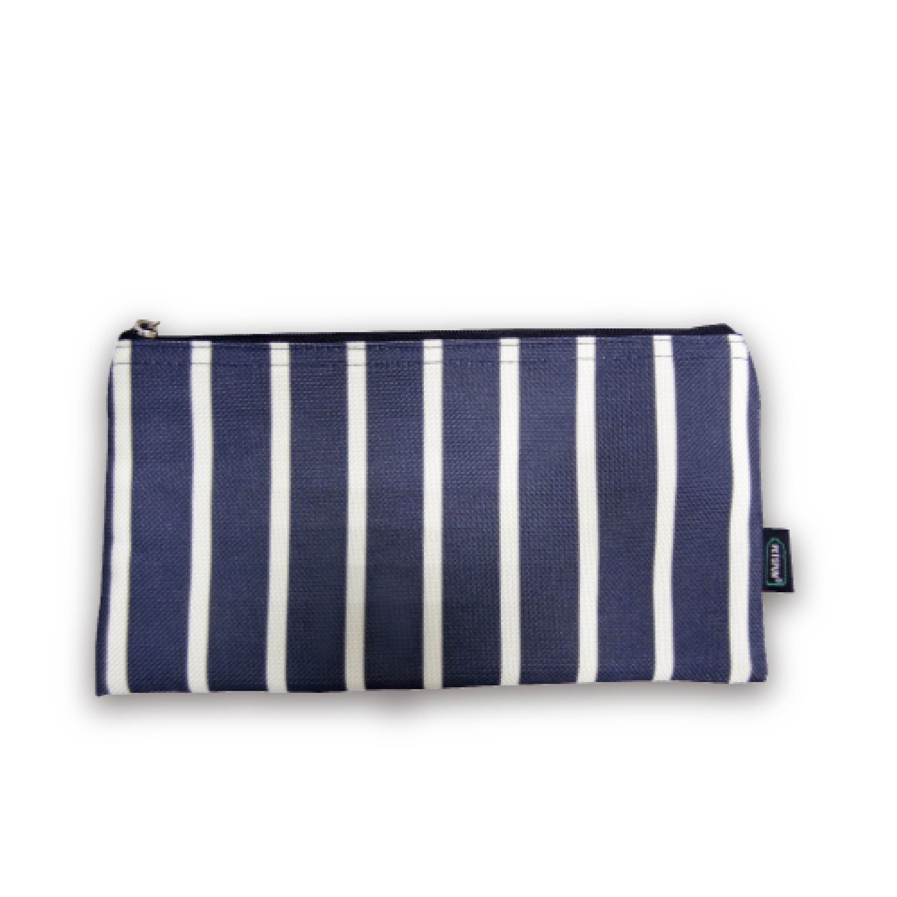
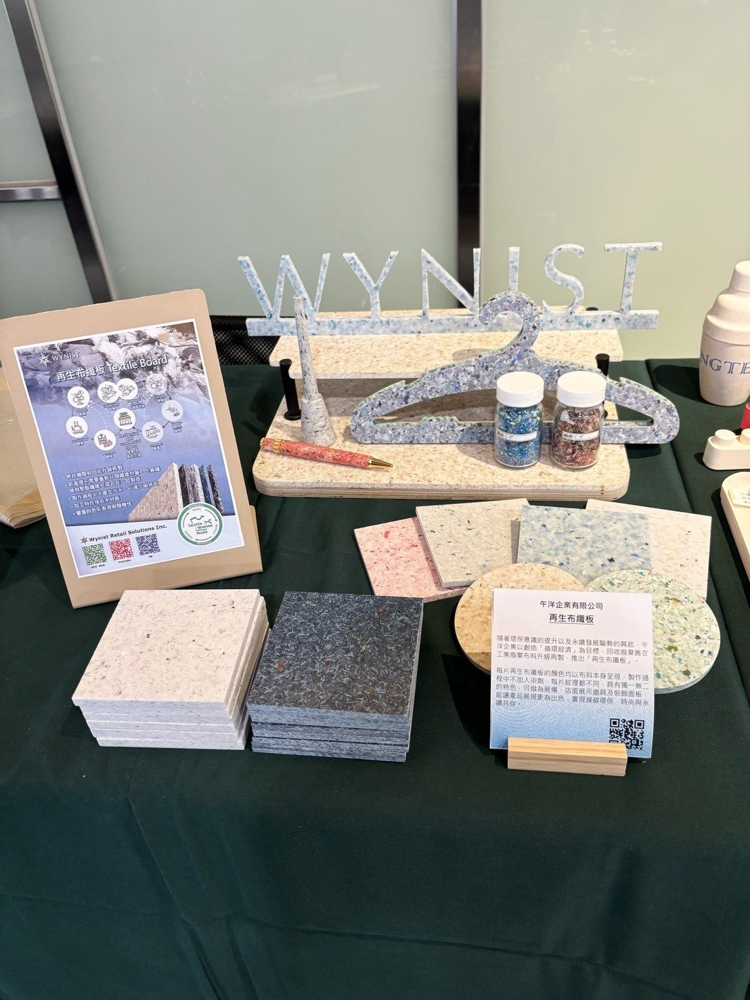
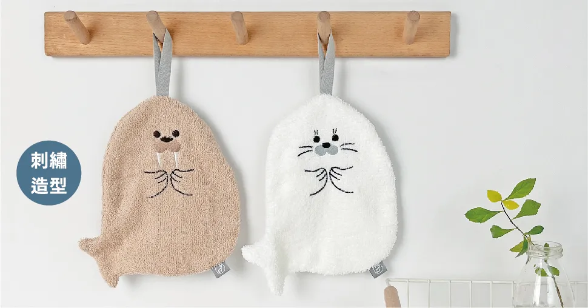
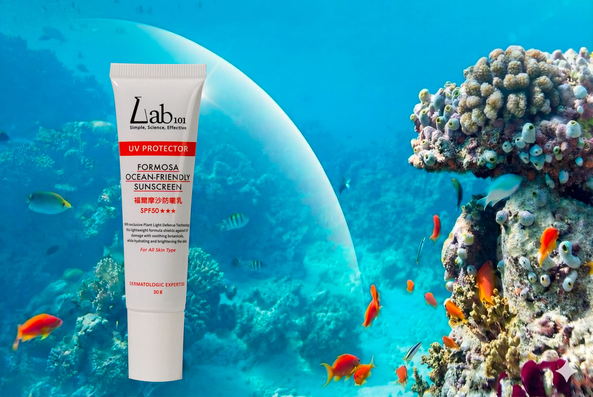
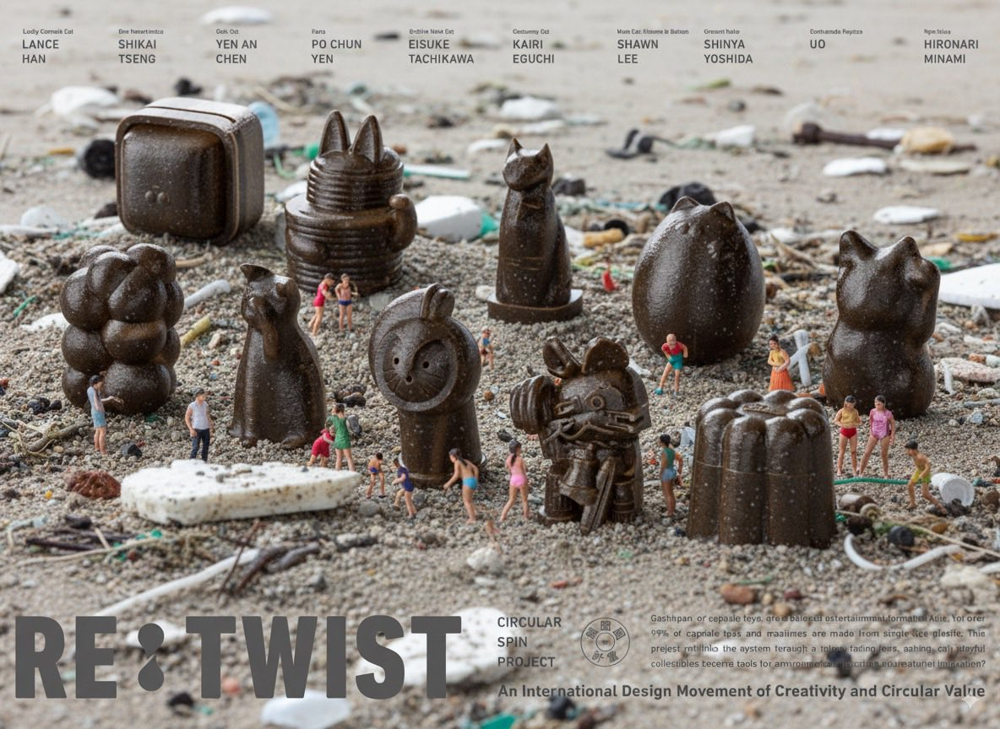

海廢禮盒介紹
富勝紡織股份有限公司｜藍白證件夾
將日常使用品轉化為減塑實踐的入口
富勝紡織長年深耕再生紡織技術，是台灣機能布料與環保纖維的先驅。品牌以「布料重生、循環再用」為理念，將回收寶特瓶轉化為高品質rPET再生紗，致力於打造具設計感與耐用度的永續日用品。
產品特色：「藍白證件夾」以機能布料製成，簡潔的條紋象徵海洋波紋，具防潑水與耐磨性能。設計輕盈實用，適合每日通勤使用。
材質來源：回收寶特瓶再生纖維（rPET）

午洋企業有限公司｜第一代布纖筆
讓廢布重生於書寫之間，傳遞環保訊息
午洋企業專注於文具與再生材料的創新開發，嘗試以紡織廢料重新定義書寫工具。「布纖筆」系列源自對循環美學的探索，希望在日常筆觸中傳遞永續設計的質感。
產品特色：筆身以再生布料壓製成布纖複合材質，保留纖維的自然紋理與色點變化，搭配金屬筆夾與可替換筆芯，兼具實用與收藏價值。
材質來源：紡織廢料再生纖維

伸仁紡織股份有限公司｜造型擦手巾
透過毛巾擁抱海洋生物，提醒人類守護共生
伸仁紡織以「從紗線開始守護地球」為品牌信念，推動回收纖維應用於家用織品，兼顧環保與親膚體驗。
產品特色：「海洋系列造型擦手巾」以可愛的海豹與海象為主題，選用柔軟尼龍再生纖維製成。手感細膩、吸水快乾，適合廚房或浴室掛掛使用。透過動物造型設計引起親子共鳴，提醒人們關注海洋棲息環境，共同守護生物多樣性。
材質來源：回收紡織纖維

詠麗生化科技股份有限公司｜海洋友善防曬乳
守護肌膚，也守護海洋
詠麗專注於研發低環境負擔配方，推動「美肌與地球並存」理念。品牌長期支持海洋環境保護，積極取得珊瑚安全認證與無害環境標章。
產品特色：防曬乳以物理性礦物成分為基底，不含對珊瑚有害的化學防曬劑。SPF50+高防護力，質地清爽不黏膩，適合日常與戶外使用。包裝採可分解材質設計，兼具美感與環保。每次擦防曬不只是保護自己，也是在保護海洋。詠麗以科學配方實踐環境友善，為肌膚與海洋築起雙重防線。
材質來源：天然礦物防曬粉體與再生包材

點睛設計有限公司｜RE:TWIST海廢再生扭蛋
讓每隻公仔成為海洋保護的行動代言人
點睛設計長期投入永續材料與文化創意的結合，致力於將廢棄塑料再製為具教育與收藏價值的設計作品。
產品特色：「海廢公仔」以回收海洋廢棄PS塑料射出成型，每一隻公仔皆呈現不同的顏色斑點與質感，象徵海洋中重生的材料。造型可愛且具組裝互動性，寓教於樂。公仔不只是玩具，而是一種倡議。透過設計將廢棄物轉化為文化載體，傳遞「再生即創新、行動即改變」的永續精神。
材質來源：海洋廢棄PS再生料

合作單位
主辦單位：海洋委員會
執行單位：工業技術研究院
設計整合單位：點睛設計有限公司